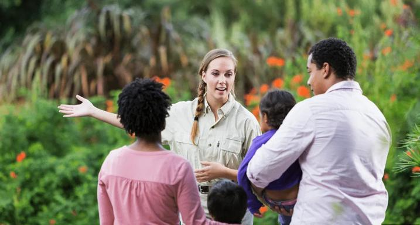
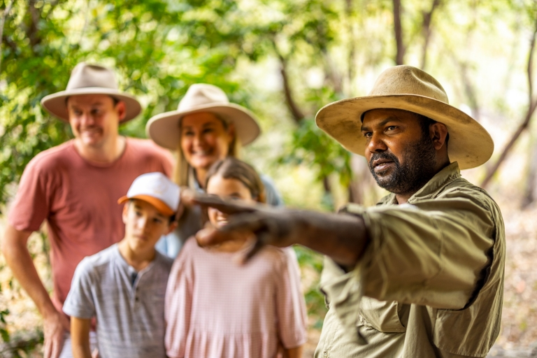

Maryborough, and nearby towns, offer you this unique opportunity to participate in our history with a wide range of immersive historical experiences. Such as push bike and horse guided tours of the old digging and ruins. We also assorted 19th century re-enactments, such as at Dunolly police station and court house. As well as a variety of small museums and displays featuring relics from the goldrush, and from various stages of the region's development over the subsequent decades, including WW1.
Also don't miss out on the opportunity to learn about culture of our indigenous Australians from the region. See their art, both modern and from their history. Examine their historical artefacts and technology. Have a go at some of their skills, like starting a fire without matches or flints. Experience a smoking ceremony. They have a proud 60,000 year plus history in the region and across Australia.
We also have some modern experiences like splash park for your kids at the public pool, an indigenous Australian art gallery, a tour of the nearby wind farm and a rail trail from Maryborough to Castmemaine. Enjoy a bike ride or hike between our towns. We also have a McDonalds and Subway restaurants, along with fish and chips, pizza, Chinese and Thai.
In Maryborough (and surrounding towns) you will experience good old fashioned Australian country hospitality. You will bw welcomed into the community and shown around by guides and locals alike.
 